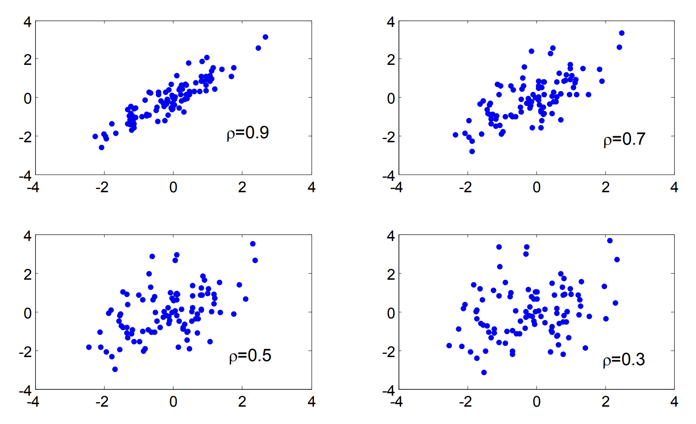

随机变量函数的期望
n维随机变量X=(X1,X2,...,Xn), 若Z=g(X1,X2,...,Xn),则
离散情形：E(Z)=∑i1...∑ing(x1,x2,...,xn)P(X1=x1,...,Xn=xn)
连续情形：E(Z)=∑i1...∑ing(x1,x2,...,xn)P(X1=x1,...,Xn=xn)
Var(Z)=E[(Z−E(Z))2]=E(Z2)−E(Z)2
随机变量和的期望等于期望求和
E(X1+X2+...+Xn)=E(X1)+E(X2)+...+E(X3)
若X1,X2,...,Xn相互独立， 则E(X1X2...Xn)=E(X1)+E(X1)+...+E(Xn)
若X1,X2,...,Xn相互独立， 则Var(X1+X2+...+Xn)=Var(X1)+Var(X2)+...+Var(Xn)
协方差
多元随机变量更本质的方面是各分量之间的相互关系、相互作用，这方面最重要的数字特征是协方差与相关系数
定义：设(X,Y)是二元随机变量，E(X−E(X)(Y−E(Y)))称为X,Y的协方差，记为Cov(X,Y)。
Cov(X,Y)=E(XY)−E(X)E(Y)。若X,Y相互独立，Cov(X,Y)=0
随机变量和的方差公式
Var(X±Y)=Var(X)+Var(Y)±2Cov(X,Y)
相关系数
二维随机变量(X,Y), Var(X)Var(Y)>0，则X,Y的相关系数定义为
Corr(X,Y)=Var(X)Var(Y)Cov(X,Y)=σxσyCov(X,Y)
相关系数的性质
- −1⩽Corr(X,Y)⩽1
- Corr(X,a)=0
- Corr(X,Y)=Corr(Y,X)
- Corr(c1X+a,c2Y+b)=∣c1c2∣c1c2Corr(X,Y)
相关与独立
随机变量X,Y独立 ⇒ X,Y不相关；随机变量 X,Y不相关 ⇒ X,Y独立
实际上,相关系数反映的是随见变量之间在线性关系意义下的相关程度，所以也称（线性）相关系数，不相关指的是不存在线性相关的关系，相关系数并不能有效地表达非线性的相关关系。因此随机变量 X,Y不相关 ⇒ X,Y独立

图1 不同相关系数下的x, y的分布